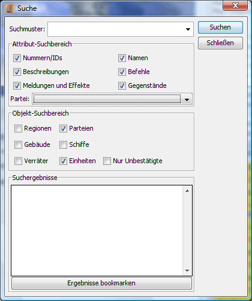

STRG-F
Mit dieser Funktion kann man den Report nach Stichwörtern durchsuchen und so "verlorene" Einheiten, Schiffe usw. finden. Dabei kann man den Suchbereich in folgendem Dialog einstellen:

Das Feld Suchmuster kann dabei auch leer bleiben. Die Suche nach einem leeren Suchmuster und dem Suchbereich "Schiffe" liefert z.B. als Ergebnis alle Schiffe, die im Report auftauchen.
Im Block Attribut-Suchbereich kann man einstellen welche Attribute eines Objekts bei der Suche berücksichtigt werden sollen. Auch kann man hier die Suche auf eine bestimmte Partei einschränken.
Der Block Objekt-Suchbereich erlaubt das Einschränken der Suche auf Einheiten, Gebäude, Schiffe, Regionen und Verräter.
Mit Klick auf das Suchergebnis wird das entsprechende Objekt im Hauptfenster angezeigt.